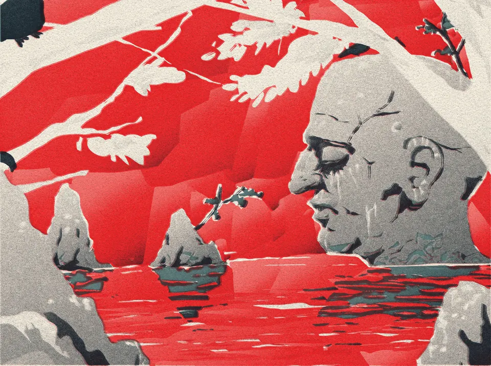
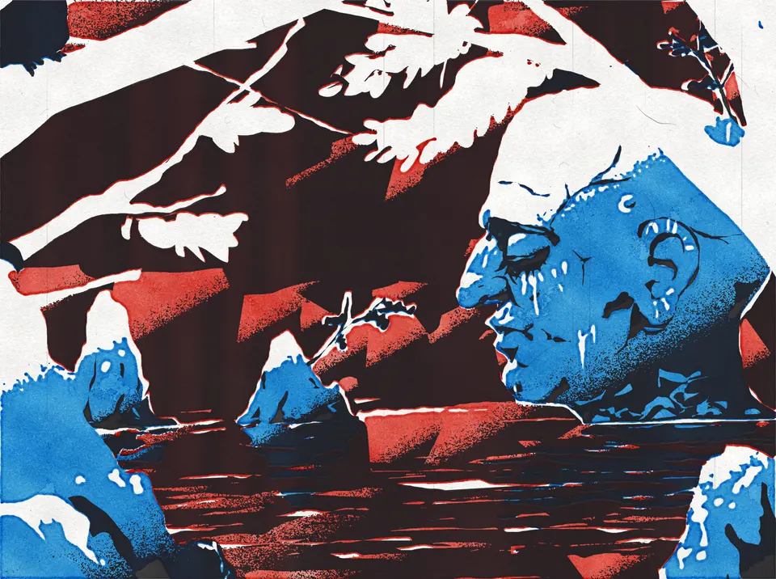
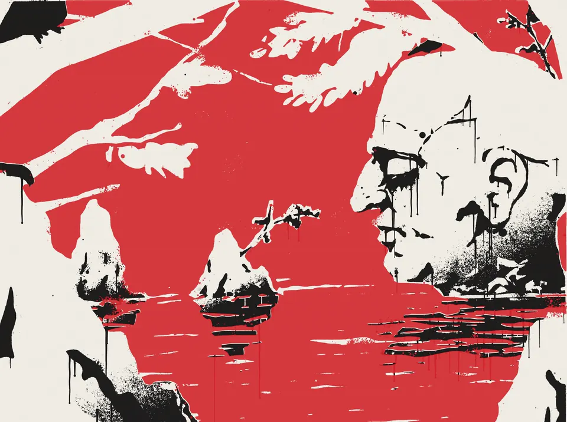
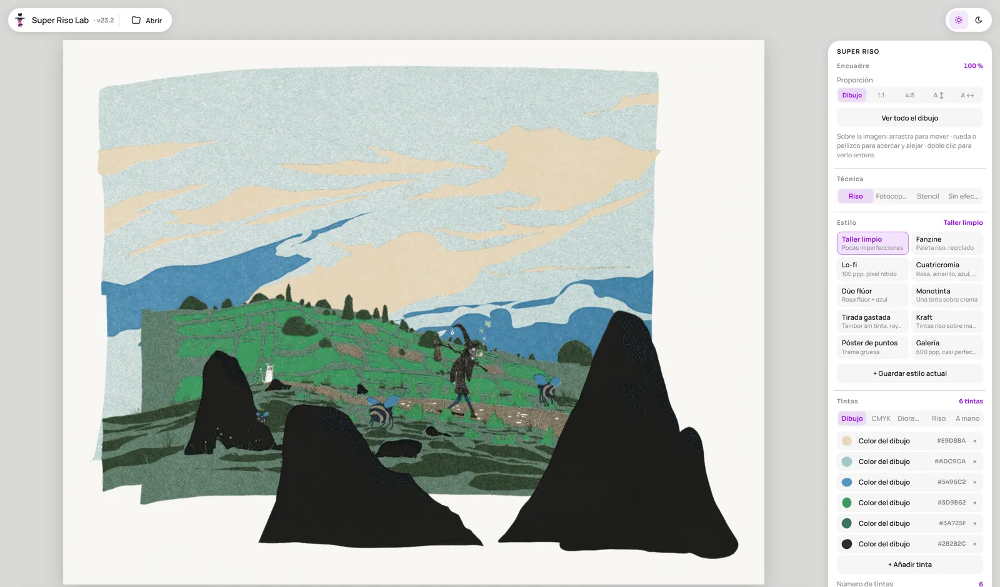

Riso
Up to 8 inks, grain or dot screens, fibrous paper and the misregistration that makes it look printed by hand.
Diorame is a free drawing app where every layer lives in its own place in space, like a digital diorama. Its Super Riso effect prints what you draw as riso, photocopy or stencil, in real time. No account, no install.
Open Diorame
Up to 8 inks, grain or dot screens, fibrous paper and the misregistration that makes it look printed by hand.

Toner darkness, copy-of-a-copy generations, fluorescent papers and hand colouring with marker or watercolour.

One to four stencils, spray, drips and splatters on wall, cardboard, canvas, wood or paper.
Super Riso Lab is a free print studio in the browser: seven papers, print runs of variations, a looping video and a high-resolution export without effect.

Because every layer is a scene in space, as in a diorama: you draw flat and the camera builds the depth. The name just swapped the A for an E. If you came looking for a diorama maker, this is the digital kind.
Yes. Free forever, no account, nothing to install. It is open source (CC BY-NC-SA 4.0).
Super Riso Lab exports one plate per ink, on sheets from A6 to A2 at up to 600 dpi.
Yes, on tablets and computers, with Apple Pencil and stylus support. Phones are not supported.
Chrome, Firefox, Safari and Edge.